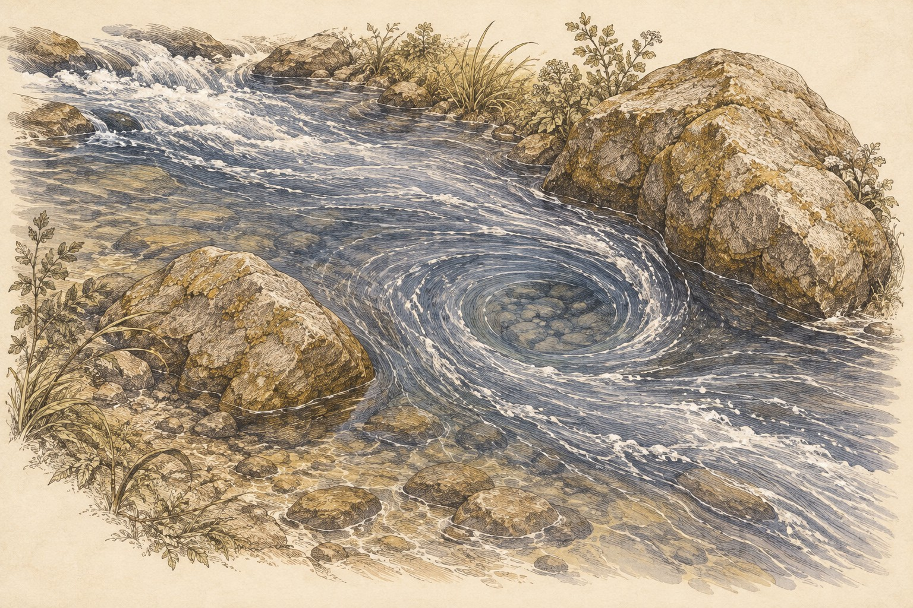
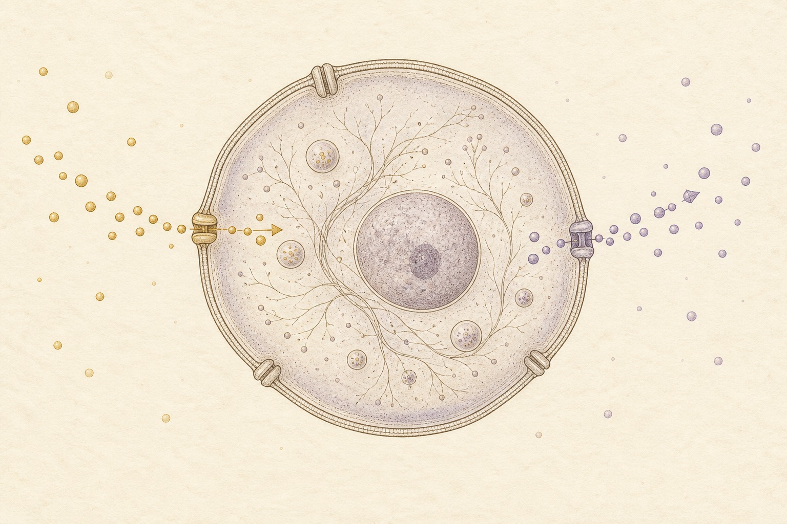
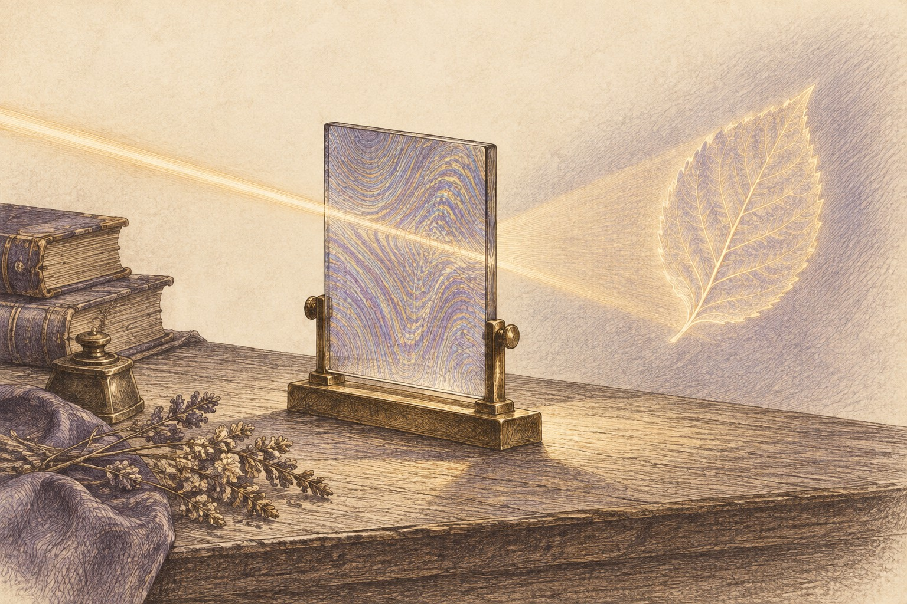

Part II
Chapter 14: Scientific Pathways
Estimated reading time: 14 min
“The most beautiful thing we can experience is the mysterious. It is the source of all true art and science.”
— Albert Einstein
After the Firmament has entered breath, relation, and choice, return to the observatory and test each bridge without closing the mystery it crosses.
Imagine two vast libraries in different wings of an old observatory. One holds number, proof, and hidden symmetry. The other holds wave, vibration, and the music of form. For centuries they seem to speak different tongues. Then a quiet intuition arises: perhaps the deepest relations in one chamber can be translated into the other without losing what matters.
The observatory opens into a final gallery, where four scientific pathways cast their own light on the Four Pillars.
Let Each Language Keep Its Law
Science supplies models and measurements; myth and contemplation bring images and lived recognition. Each can illuminate what another leaves unseen.
I. Interconnectedness
Quantum Entanglement
Entangled particles share a joint quantum state. Assigning each particle an independent state cannot reproduce it, even with probabilities for different assignments. Their measurement outcomes can correlate even across distance.
Bell-type inequalities limit the correlations predicted by models in which outcomes are set by local hidden properties; experiments violate those limits. Yet the correlation is not a signal or force passing between particles, and entanglement cannot carry faster-than-light messages.
Networks and Graphs
Network science distinguishes small-world networks, where most nodes are separated by only a few steps, from scale-free models, whose degree distribution follows a power law and leaves a few highly connected hubs. Topology changes how quickly effects spread and where a network is robust or fragile.
Category and Duality
In mathematics and physics, a duality names a disciplined equivalence between two very different descriptions. One language may speak in geometry, another in algebra or fields, yet the translation can keep the invariant relations intact.
This is not the philosophical use of duality as a split. Category theory asks how maps compose: how a map from one object to another can be followed by a further map, and what a translation preserves of that composition.
The Langlands Program: Grand Correspondence
In modern mathematics, the Langlands Program is a web of conjectures and theorems linking arithmetic and number theory with automorphic forms, harmonic analysis, and representation theory. It seeks precise correspondences among structures that can look unrelated without making them the same object. Its surprise is that information about numbers can be carried by structures built to express symmetry.
Imagine arithmetic discovering an unexpected music: different mathematical languages carrying linked structure across surprising distance.
Closer to a life, the question of translation arises between biology, felt experience, and myth: how can each describe a different aspect of the same change?
Hormones, neurotransmitters, medications, and other catalysts can shift threshold, tempo, salience, and contact before story catches up. One such shift may ease fear enough for longing to stir again.
Myth can give that movement the shape of a return from descent. Chemistry does not exhaust a life.
II. Dynamic Emergence
The Quantum Vacuum
In quantum field theory, fields permeate spacetime and still fluctuate in their lowest-energy state. “Emptiness” depends on boundaries and conditions; the vacuum is a context-sensitive physical state rather than simple nothingness. Even measurable effects such as the Casimir effect remind us that what looks empty can still behave as a structured field.
The Quantum Vacuum is physical, not the Void. As metaphor, it unsettles the equation of emptiness with inertness: even the boundaries of an apparently empty region matter.
Symmetry and Symmetry-Breaking
Many physical laws are symmetric: they remain unchanged under transformations such as rotations. A state need not retain all the symmetries of the laws that permit it. A crystal takes a particular orientation even when the underlying laws do not prefer that direction.1
Commitment offers a human image of this loss of symmetry: paths that once stood equally open cease to be interchangeable once one is lived. A life acquires direction.
Chaos and Complexity
Chaotic systems follow deterministic laws yet amplify tiny differences in initial conditions; their motion may still organize around attractors. Complexity concerns patterns generated by many interacting parts. Unpredictability and self-organization can coexist; one does not imply the other.
Dissipative Structures
In non-equilibrium thermodynamics, Ilya Prigogine’s work on dissipative structures2 describes organized patterns that can only exist by taking in energy and exporting entropy into their environment, often through heat flows—like a whirlpool, a flame, or a living cell.
When energy flow or another control parameter crosses a threshold, a far-from-equilibrium system can lose stability. At a bifurcation, different trajectories become available: another organized regime may appear, while other paths lose coherence. Instability does not choose the outcome.
At the human scale, the crucible through which the Serpent can become Dragon’s Fire asks what could sustain a different steadiness. Intense life force, grief, or trauma can exceed the old organization of self; it can feel like breaking.
Destabilization is not the medicine. Support, time, and containment can allow reorganization and help a new steadiness endure. Healing need not restore the “old calm.”

Renormalization and Scale
Renormalization asks what changes and what stays true as you zoom in or out on a system. Some features only make sense at one scale; others survive the zoom. A fixed point is the special case in which changing scale leaves the theory unchanged, once quantities are expressed in the new units.3
A description can preserve selected outcomes while leaving out the relations that produce them. A claim that a relation survives the zoom therefore needs to follow that relation, not only reproduce the result.
At the human scale, the image becomes a question: what stays recognizable as circumstances change, and what sustains it?
Fractal Hints
The Fractal Spiral Path carries this question into the smaller thresholds within larger ones. A familiar knot in a body, a relationship, and a lineage invites comparison: what relation recurs, and what changes with its setting?
III. Participatory Reality
Uncertainty and Context-Dependence
In quantum physics, certain pairs of observables, such as position and momentum, cannot both have arbitrarily sharp distributions in the same quantum state. The limit belongs to the formalism, not merely to imperfect instruments. A specified measurement yields one of its possible outcomes according to probabilities encoded by the quantum state. What that state represents before the outcome—and whether any physical collapse occurs—depends on the interpretation.4
Quantum Interpretations and Collapse Models
Competing interpretations—Copenhagen, Many-Worlds, Bohmian, and QBism among them—differ on how outcomes arise and what a quantum state means. Objective-collapse models instead modify quantum dynamics and make testable physical predictions; they are not merely interpretations of unchanged formalism.5
Every account remains answerable to experiment; no story is licensed to absorb every result.
Wheeler’s Participatory Universe
Theoretical physicist John Archibald Wheeler proposed a “participatory universe”:6 not a finished stage we merely witness, but a cosmos whose describable reality is braided with the questions, measurements, and records through which it is known.
His phrase it from bit names this intuition: that the physical “it” cannot be fully separated from the informational distinctions, the “bits,” by which it becomes definite.
Wheeler sketched this as a great “U” of the universe with an eye at one end, looking back toward its own origin. His cosmic self-portrait holds a question: whether what becomes definite depends on the distinctions an observer can make.
On a human scale, the image invites participation within conditions you never fully stand outside, loosening the fantasy of mastery over reality. A life looks back into the field that formed it.
Game Dynamics and Equilibria
In game theory, a Nash equilibrium is a strategy profile in which no player can benefit by changing strategy unilaterally. It can be cooperative or exploitative: stable does not mean good. An equilibrium may shift when payoffs or available strategies change.
Relationships and communities settle into patterns just as systems do. The participatory edge is salience: what each person expects in the room changes which choices feel available. If candour is punished and the mask earns approval, distortion stabilizes. If reciprocity and honest signals become easier to sustain, more coherent forms of cooperation become possible.
Measurement, Usefulness, and Humility
Across sciences, models earn trust inside their domains and grow thin outside them.
The Entangled Firmament asks for the same discipline. The useful description is the one that clarifies the moment; no single language gets to erase the rest.
IV. Bounded Infinity
Information and Boundaries
In Shannon’s information theory, information means measurable distinctions moving through limited channels, with noise and capacity shaping reliability; it does not by itself supply semantic meaning.
A conversation gives the limited channel a human image: interruption, threat, or speed can overwhelm what either person can receive; enough pacing and structure let meaning survive the crossing.
Information also has a physical bearer. Landauer’s principle states a narrower physical limit: logically irreversible information erasure has a minimum thermodynamic cost under defined conditions.
Autopoiesis
Coined by biologists Humberto Maturana and Francisco Varela, autopoiesis7 (self-creation) describes a self-producing network: its processes continually generate the components that regenerate the network and constitute the living unity, including its boundary.
A cell’s activity produces and renews its membrane; the membrane helps maintain the conditions in which that activity can continue. Its selective exchanges let nutrients in and waste out while keeping the cell intact. Boundary and production sustain one another. If exchange fails, the cell cannot sustain itself; if the membrane dissolves, it loses its living contour.

The membrane offers a contemplative image of Bounded Infinity: a living boundary gives depth local form while keeping exchange possible. The finite contour does not contain or exhaust the infinity it renders.
Holography
At its most concrete, holography begins as an optical act. Coherent beams meet, a bounded plate records their interference, and later the right light can reconstruct an image from that distributed trace. The pattern spans the plate rather than occupying one privileged point.
Ideas from black hole thermodynamics and quantum gravity (especially string theory) give this image a boundary charge: the information inside a region may be encoded on its edge. One reason this became compelling is that black hole entropy scales with horizon area rather than enclosed volume.
Dennis Gabor’s model of temporal recall and Karl H. Pribram’s holonomic brain work borrowed holography to think about distributed memory and retrieval.8 This was a deliberate transfer from optics, not independent confirmation of a hidden structure. The question is how a distributed trace becomes available for recall.
Gabor’s earlier time-frequency functions also influenced signal analysis.9 Later work found that simple-cell receptive fields in visual cortex can often be approximated by two-dimensional Gabor filters.10 Here the bridge meets a specific test: how closely does the mathematical filter describe a measured receptive field?
The boundary matters: this bridge does not prove consciousness is a literal hologram, nor does it prove that neurons compute by sustained quantum coherence. Neural function rests on molecular and ionic events whose chemistry is quantum at bottom. Action potentials and cortical signalling, however, are usually modelled at the cellular scale through classical electrophysiology, stochastic ion-channel dynamics, and rapid decoherence.11

Black Hole Physics
Black holes test our theories and offer potent images for inner thresholds. A black hole is a region where gravity is so strong that nothing, not even light, escapes once it crosses the event horizon. The edge is physically severe and theoretically strange: time, information, and description all come under pressure there.
To distant observers, infalling objects appear to slow near the horizon. In many common explanations of sufficiently large black holes, horizon crossing is locally uneventful for the falling object, at least before tidal forces become severe—while still irreversible.
The difference between those observers belongs to the geometry. In relativity, a clock traces a path through spacetime, and the elapsed time it records belongs to that path. There is no master clock keeping one present for every traveller. In general relativity, the geometry itself responds to matter and energy.
Ordinary quantum mechanics uses time differently. The state of an atom or electron evolves with a parameter, , supplied to the calculation. Here labels when the state is described; it is not an observable of that system in the way position is. The description borrows its time from a clock it does not itself model.
The difficulty comes when the geometry itself must be described quantum mechanically. The clock can no longer simply be assumed outside the account, and how to recover familiar time remains unsettled.12 Choosing among interpretations of quantum measurement does not by itself solve that problem.
As an image for a life, the black hole’s horizon shifts the question from how time is measured to what a crossing changes. It becomes a one-way threshold: a choice you cannot uncross. Once that choice is made, the grinding friction of “should I?” can stop; the work becomes care for the shape now chosen. A decision can look unfinished from outside and already settled within.
Quantum theory makes the edge stranger still: Hawking radiation and the information problem mean black holes are not just places where matter vanishes. The harder question is where the pattern goes, how it is encoded, and whether apparent loss is loss at all.
Positive Geometry
In a highly symmetric theory of particle interactions, positive geometry constructs expressions for scattering calculations from mathematical shapes.13 The geometry is part of how the result is found: relations that would otherwise be pursued through algebra become accessible through the shape.
Within the contemplative wager of Bounded Infinity, a finite form can likewise disclose what would remain unseen without it. A life gives the inexhaustible a particular body, history, and horizon through which to appear.
Let the Wonder Stay Honest
The sky does not disappear here. It moves inward, where hidden shapes begin to show their faces.
The bridge now turns intimate: not equations or formal systems, but the recurring faces by which these forces enter fear, longing, conflict, devotion, and choice.
For crystal formation as the breaking of continuous translational and rotational symmetries, see David Tong, Statistical Field Theory, Introduction. The symmetry of the underlying laws need not be shared by the state.↩︎
For an early formulation, see Ilya Prigogine, Dissipative Structures, Dynamics and Entropy (1975).↩︎
A renormalization-group (RG) fixed point is a point in theory space left unchanged by the RG transformation: dimensionless couplings stop flowing and their beta functions vanish. See Kenneth G. Wilson and J. Kogut, The renormalization group and the ε expansion, Physics Reports 12(2), 75–199 (1974). For an accessible statement of the fixed-point condition, see Alex Kovner, Introduction to Renormalization Group, pp. 15, 29 (2013).↩︎
See Maximilian Schlosshauer, Decoherence, the measurement problem, and interpretations of quantum mechanics, Reviews of Modern Physics 76, 1267–1305 (2005).↩︎
See Angelo Bassi et al., Models of wave-function collapse, underlying theories, and experimental tests, Reviews of Modern Physics 85, 471–527 (2013).↩︎
For Wheeler’s participatory-universe language, see the archival record for This participatory universe (1981) at the American Philosophical Society, and John Archibald Wheeler, Information, physics, quantum: the search for links (1989).↩︎
For the original framework, see Humberto R. Maturana and Francisco J. Varela, Autopoiesis and Cognition: The Realization of the Living (1980).↩︎
See Dennis Gabor, Holographic Model of Temporal Recall, Nature 217, 584 (1968); Karl H. Pribram, Languages of the Brain: Experimental Paradoxes and Principles in Neuropsychology (1971); and Karl H. Pribram, M. Nuwer, and R. J. Baron, The holographic hypothesis of memory structure in brain function and perception (1973).↩︎
For Gabor’s time-frequency analysis, see Dennis Gabor, Theory of communication, Journal of the Institution of Electrical Engineers — Part III 93(26), 429–441 (1946).↩︎
For visual receptive fields and Gabor filters, see John G. Daugman, Uncertainty relation for resolution in space, spatial frequency, and orientation optimized by two-dimensional visual cortical filters, Journal of the Optical Society of America A 2(7), 1160–1169 (1985), and J. P. Jones and L. A. Palmer, An evaluation of the two-dimensional Gabor filter model of simple receptive fields in cat striate cortex, Journal of Neurophysiology 58(6), 1233–1258 (1987).↩︎
For the decoherence guardrail, see Max Tegmark, The importance of quantum decoherence in brain processes, Physical Review E 61, 4194–4206 (2000).↩︎
For the different roles of time in ordinary quantum theory and general relativity, see Edward Anderson, Problem of Time in Quantum Gravity, Annalen der Physik 524, 757–786 (2012), especially §1.2. For clocks, proper time, and the differing treatments of time across quantum-gravity approaches, see Charis Anastopoulos, Time and causality in quantum gravity, lecture notes (2026).↩︎
For a construction of one-loop scattering-amplitude integrands in planar N=4 super-Yang–Mills theory, see Livia Ferro, Ross Glew, Tomasz Łukowski, et al., Prescriptive unitarity from positive geometries (2024).↩︎